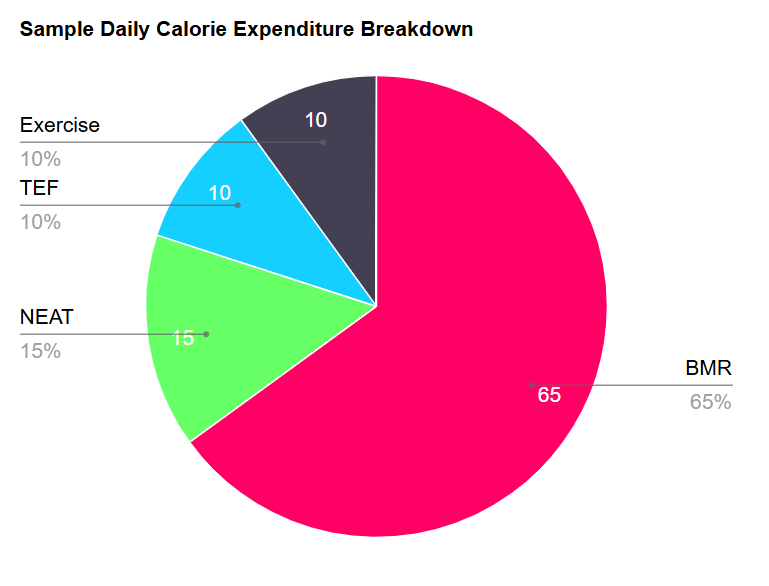

In essence, fat loss is very simple. However this does not mean it's easy. To lose weight one must be in a calorie deficit (expend more energy than they consume). However there are many more things that contribute to successful fat loss. We'll look deeper into each of these factors below. Weight loss and fat loss are often thought as interchangeable terms, but they're not. We use weight as a measure as it is easy and accessible, but it’s important to note that you do not necessarily have to lose weight to lose fat. Muscle weighs more than fat, so if you're putting on muscle you might not see the number on that scale dropping as fast as you’d like. That's ok. We use our weight as a tool and a guide but not the be all and end all.
As mentioned above a calorie deficit is a necessary component of weight loss. We will not lose weight if we do not use more energy than we take in through our diet. This will force the body to use its stored energy.
Your daily calorie expenditure is made up of your BMR(basal metabolic rate), NEAT(non-exercise activity thermogenesis e.g. fidgeting, household chores), TEF(thermic effect of food - calories burned digesting food) and exercise.
 Your BMR is the amount of calories you body burns at rest, it is heavily influenced by your genetics and body composition so estimating your daily energy needs can be difficult. Online calorie calculators can provide a good starting estimate. From here I would recommend tracking your weight regularly to see how it fluctuates with the changes you make. Consistent weigh-ins conditions is important. Always try to weigh yourself in the morning before eating or drinking. Even still your weight will naturally fluctuate a lot, that’s why I recommend regular weigh-ins, not just once a week as it'll give you a better picture of the overall trend. Women should be aware about how their menstrual cycle can affect their weight. Consider comparing week 1 of your cycle to week 1 of the previous cycle rather than looking week to week.
Aim to lose weight at a rate of 0.5-1kg per week. Losing more than 1kg per week is likely too fast (unless you have a lot to lose), you may begin to lose muscle mass and your body may compensate for this extreme rate of loss making it hard to lose fat going forward. Slow, sustainable, consistent progress is the key.
As we've seen above, exercise only contributes a small proportion of our total daily energy expenditure. Therefore our main focus should be on improving our diet, with exercise as more of a supplement to our healthy eating habits.
When starting to diet it should be easy, do not go 100% from the start. There is going to come a point where you're going to have to give more effort and if you're already at 100% that's not possible. This is the reason a lot of people fail when they try to lose weight. While the motivation is high they do everything perfect but this is unsustainable. Being good most of the time beats being perfect sometimes.
Start by identifying your main unhealthy habits and make small changes to those e.g. change to diet sodas, only get takeaway once a week, add a few more veggies to your plate, go to the gym once a week, etc... We are looking to do the least amount of work possible that leads us in the right direction toward our goal. Gradually overtime the effort we put in will have to slowly increase but this won't feel so bad as we do it in small, sustainable steps. Now it just feels part of our new, healthier lives.
As mentioned above exercise is only responsible for a small portion of our daily calorie expenditure. In contrast we saw that our BMR is by far the biggest portion. Luckily for us by lifting weights and building more muscle we can easily increase our BMR. Muscle requires energy to be built and maintained and along with a healthy diet is probably the best way to lose weight and keep it off in the long run.
Unfortunatly online you can't go ten minutes without seeing an article for the new perfect diet or how hollywood models lose belly fat eating only airfried mango.
This is all complete bullshit. There is no perfect diet, there is no foods that make you lose weight, there's no one size fits all approach to dieting. There are a few basic principals to follow and the rest should be built to fit you and your lifestyle. These basic principals are:
Dieting should not feel like absolute hell. Find ways to make your favourite foods healthier and make your diet work for you. Air fried fries are a personal favorite, plus they're healthy and super filling! Don't demonise certain foods just because they're considered traditionally unhealthy. I genuinly believe potatoes are one of the best weight loss foods, they're versitile, enjoyable to eat, easy to cook and very satiating.
Let's take a look at some popular "weight-loss" diets
Low carb is one of the most popular approaches to dieting, yet there is nothing magical about it. People claim it is great for weight loss, which is obviously going to be the case when you eliminate an entire food group. If you find it works for you then go ahead but for most people this diet is too restrictive and unenjoyable.
Same idea as the low carb diet by severely eliminating a major food group your calories will naturally be a lot lower. A vegan diet tends to be a lot lower in calories so you can eat a larger quantity of food, however you must be sure to get in enough protein. Animal products are generally very high in protein and therefore very satiating (filling), on a carnivore diet you must ensure you don't miss out on vital micronutrients from fruits and vegetables. I really wouldn't recommend either of these diets from a fat loss point of view. A balanced diet is likely going to be healthy and more sustainable in the long run.
Yo-yo diets are the classic magazine, Hollywood diets. The juice diet is probably the most popular of these. Yo-yo diets get there name from how your weight fluctuates on these diets. Yes, you will lose weight extremly fast to begin with (because you're eating practically nothing) but your body will be forced to adapt to this extreme and adjust your daily energy expenditure accordingly. Now that your body is adjusted to running off extremly low calories when you return to your normal way of eating you'll put back on the lost weight and in most cases gain even more. This is why is said earlier that starting slow is key, to minimise this reaction by your body allowing you to sucessfully lose fat over a long period of time
Intermittent fasting has gained huge popularity over the last decade, yet again, like everything above there is absolutely nothing magical about it. Simply by limiting your eating window to 8 or 10 hours you will likely eat less than if you ate over a typical 16 hour waking period. If it works for you, do it. But if it doesn't fit your lifestyle then don't, your not going to miss out on anything.